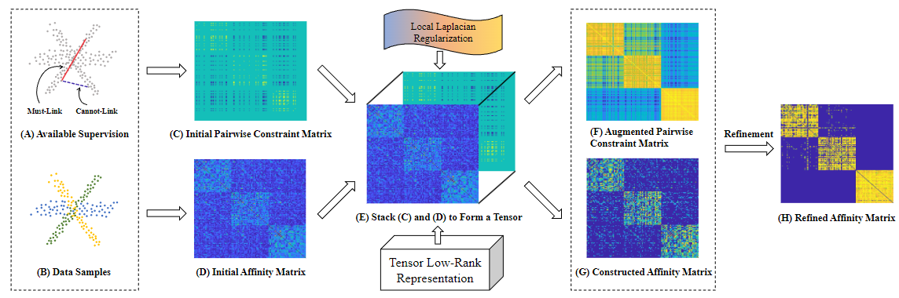
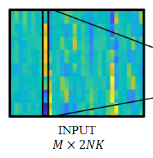

|
Research
My research passion is on "building general agents for open environments". I am concerned with how to discover primitives in decision series or world models that contain common sense of an open environment, and how to combine them to solve creative tasks efficiently. Specifically, I am interested in Vision-Language Learning, Video Understanding and Data-Efficient Learning.
I have some research experiences in computer vision and machine learning. Most of my previous work focuses on how to leverage the proper prior knowledge to boost performance in particular applications.
|
|

|
Semi-Supervised Subspace Clustering via Tensor Low-Rank Representation
Guanxing Lu, Yuheng Jia and Junhui Hou.
IEEE TCSVT, under review.
[code] /
[arxiv]
We proposed a novel semi-supervised subspace clustering method, which can simultaneously augment the initial supervisory information and construct a discriminative affinity matrix by leveraging their identical global low-rank
structure.
|
|

|
Learning Low-complexity Robust Transceiver for Massive MIMO Downlink with Enhanced Mobility
Guanxing Lu, Yundi Li, Huapeng Zhou, Yafei Wang and Wenjin Wang.
Proc. IEEE PIMRC, accepted.
[code]
We derived a quasi-closed-form solution for a multi-user massive MIMO downlink system that BS can only get imperfect CSI, and developed a novel DL-based framework to accelerate the algorithm.
|
Last updated: Sep 23, 2022 test
|
{kind=link}